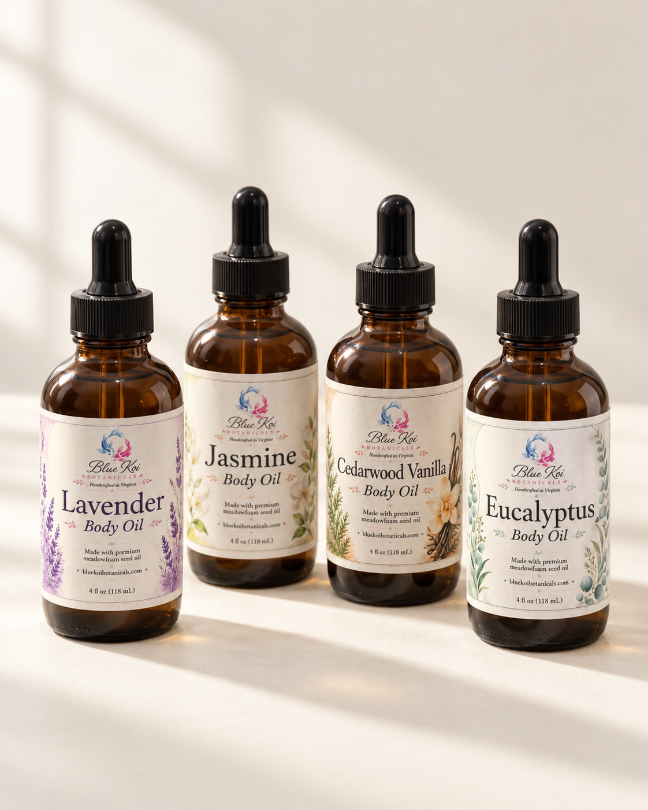
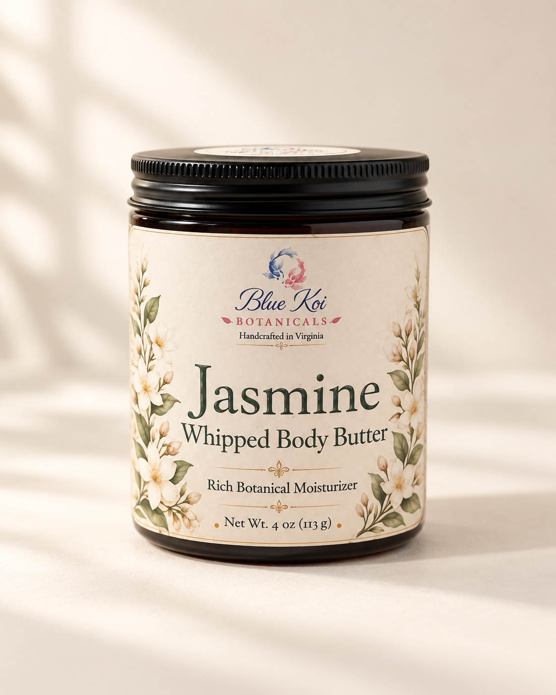
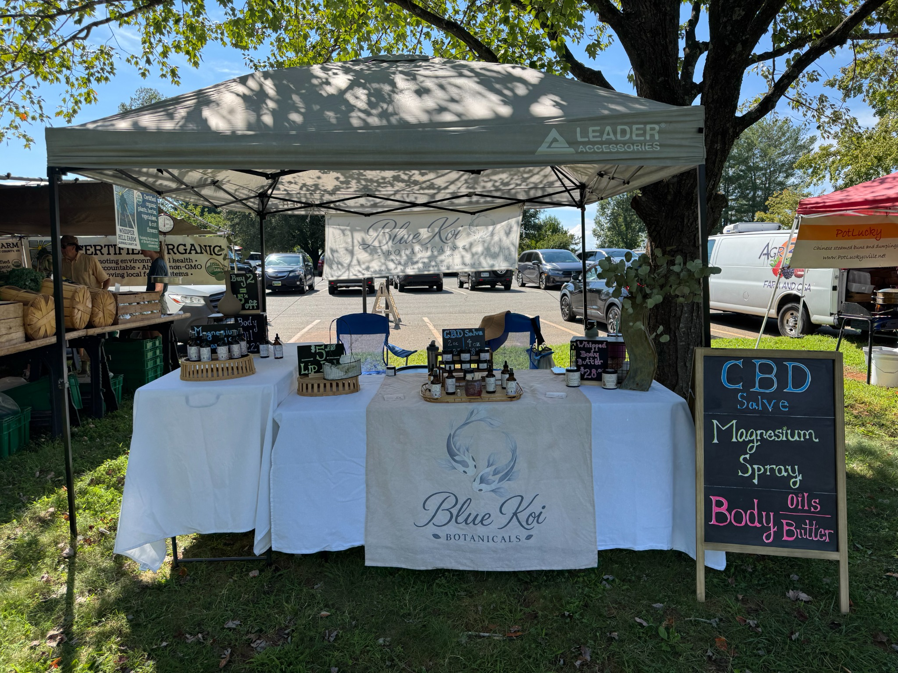

Handmade in Virginia
Body care,
made by hand.
We make body oils, salves, balms, and butters in small batches here in Virginia. Take a look around, or come say hello at the market.
Woman-owned · Made in small batches

Jasmine & ylang ylang
Oil or butter?
A few drops of oil on damp skin, or a small scoop of butter for the dry spots. The same floral scent, in two different textures.

Jasmine Body Oil
$18Jasmine and ylang ylang in a blend of meadowfoam and jojoba oils. Floral, smooth, and easy to spread.
Meet the oil
Jasmine Whipped Body Butter
$28A rich whipped butter with jasmine and ylang ylang. Shea butter, cocoa butter, and plant oils help soften dry skin.
Meet the butter
A small Virginia business
Come say hello.
There’s something nice about trying a scent in person and talking to the person who made it. We bring Blue Koi to markets around Charlottesville.
Send Gwyn a note to find out where we’ll be next, or ask about a product you’ve had your eye on.
Get in touch